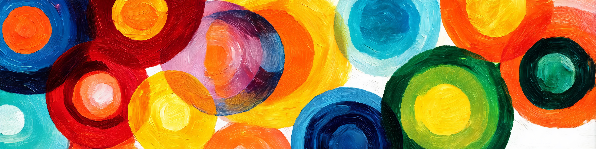

seq = ['a','b','c', 1]
for e in seq:
print(e)a
b
c
1Joern Ploennigs · AI4SC

Wiederholung ohne Struktur skaliert nicht. Schleifen machen Wiederholung planbar, überprüfbar und automatisierbar.
KI-Tools generieren Schleifen routinemäßig. Als Ingenieur*in müssen Sie nicht jede Schleife von Grund auf selbst schreiben — aber Sie müssen sie lesen, verstehen und verifizieren können.
Drei Kernfragen beim Lesen einer Schleife:
In Python sind zwei Schleifen verfügbar:
for — for-each-Schleife: iteriert durch eine Sequenzwhile — while-Schleife: wiederholt, solange eine Bedingung wahr ist→ Kollektionstypen (Listen, Dicts, Tupel): siehe 02b_Datentypen (S02)
Der for-Loop in Python ist eine for-each-Schleife. Er iteriert immer durch eine Sequenz an Werten, wie z.B. eine Liste. Die Variable des Iterators e enthält dabei den aktuellen Wert der Sequenz seq. Hiermit lässt sich sehr leicht durch Listen iterieren.
oder Tupels
Der for-Loop in Python kann auch als klassische for-Schleife verwendet werden, bei der man \(n\)-mal etwas wiederholt. Dazu erzeugt man mit der range(n) Funktion eine Folge an Zahlen, durch die dann wie gewohnt als for-each-Schleife iteriert wird. Der Iterator i nimmt dabei den Wert des Zählindexes an.
Der Unterschied wird klarer, wenn man sich ansieht, wie man mit einem nummerierten Index durch eine Liste laufen würde. Hierfür bestimmt man die Länge der Sequenz mit len(), erzeugt einen numerischen Iterator mit range() und greift dann auf die indizierten Werte der Liste mit seq[i] zu. Dies entspricht einer klassischen for-Schleife durch ein Array, wie sie z.B. in C oder Java zu finden ist.
Index: 0; Wert a
Index: 1; Wert b
Index: 2; Wert cDa dies sehr umständlich ist, bietet Python die enumerate-Funktion als Vereinfachung an. Sie macht aus einer beliebigen Sequenz eine nummerierte Sequenz. Das ist sinnvoll, wenn man den Index i noch aus anderem Grund braucht.
Auch durch Dictionaries kann man mit einem for-Loop iterieren. Beim einfachen for key in seq: werden nur die Schlüssel ausgeliefert, nicht die Werte. Den zugehörigen Wert kann man dann separat über seq[key] nachschlagen.
Schlüssel: key1; Wert wert1
Schlüssel: key2; Wert wert2
Schlüssel: key3; Wert wert3oder man iteriert gleich durch alle Schlüssel-Wert-Tupel.
Damit kann man dann zum Beispiel eine Liste an Messwerten aus imperialen Fuß in metrische Meter umrechnen.
[1.2801600000000002, 0.70104, 1.88976, 3.2004]In Python gibt es für solche einfachen for-Schleifen auch wieder eine Kurzschreibweise als Syntax-Zucker.
While-Loops werden primär verwendet, wenn die Länge der Schleife am Anfang noch nicht bekannt ist. Dabei wird die Schleife so lange wiederholt, wie eine bestimmte Bedingung gegeben ist. Man unterscheidet in der Informatik die Typen:
In Python gibt es nur die while-Schleife. Do-While- und Repeat-Until-Muster sind hier also konzeptionelle Muster, die man mit einer passenden while-Schleife nachbildet.
In der while-Schleife kann die Bedingung schon am Anfang falsch sein. Die Schleife muss also nicht ausgeführt werden.
Die While-Schleife wird ausgeführt, weil die Bedingung am Anfang der Schleife erfüllt ist: 3 > 0
Die While-Schleife wird ausgeführt, weil die Bedingung am Anfang der Schleife erfüllt ist: 2 > 0
Die While-Schleife wird ausgeführt, weil die Bedingung am Anfang der Schleife erfüllt ist: 1 > 0Die While-Schleife wird 3-mal ausgeführt da die Bedingung wahr ist und wir bis 0 runter zählen
Die While-Schleife wird nicht ausgeführt, da n bereits 0 ist
Beim Do-While-Muster wird die Bedingung erst am Ende geprüft. Die Schleife wird also immer mindestens einmal durchlaufen. In Python gibt es dafür keine eigene Syntax, aber das Verhalten lässt sich mit einer while-Schleife nachbilden, deren Bedingung zunächst auf True gesetzt und am Ende des Schleifenkörpers aktualisiert wird.
n = 3
bedingung = True # Bedingung ist zunächst als True initialisiert
while bedingung:
n -= 1 # wir zählen die Variable n runter
bedingung = n > 0 # Die Bedingung wird erst am Ende der Schleife neu gesetzt
print("Die Do-While-Schleife wird mindestens einmal ausgeführt, bis die Bedingung am Ende der Schleife nicht mehr erfüllt ist.")Die Do-While-Schleife wird mindestens einmal ausgeführt, bis die Bedingung am Ende der Schleife nicht mehr erfüllt ist.
Die Do-While-Schleife wird mindestens einmal ausgeführt, bis die Bedingung am Ende der Schleife nicht mehr erfüllt ist.
Die Do-While-Schleife wird mindestens einmal ausgeführt, bis die Bedingung am Ende der Schleife nicht mehr erfüllt ist.Die Do-While-Schleife wird auch 3 mal ausgeführt da die Bedingung wahr ist und wir bis 0 runter zählen
Die Do-While-Schleife wird einmal ausgeführt, obwohl n bereits 0 ist.
n = 0
bedingung = True # Bedingung ist zunächst als True initialisiert
while bedingung:
n -= 1 # wir zählen die Variable n runter
bedingung = n > 0 # Die Bedingung wird erst am Ende der Schleife neu gesetzt
print("Die Do-While-Schleife wird mindestens einmal ausgeführt, bis die Bedingung am Ende der Schleife nicht mehr erfüllt ist.")Die Do-While-Schleife wird mindestens einmal ausgeführt, bis die Bedingung am Ende der Schleife nicht mehr erfüllt ist.Beim Repeat-Until-Muster wird die Bedingung ebenfalls erst am Ende geprüft. Die Schleife wird also auch immer mindestens einmal durchlaufen. Sie wird so lange wiederholt, bis die Bedingung wahr wird. In Python gibt es auch hierfür keine eigene Syntax; man bildet das Muster daher mit while not bedingung: nach.
n = -3
bedingung = False # Bedingung ist zunächst als False initialisiert
while not bedingung: # wird aber im while negiert
n += 1 # wir zählen die Variable n hoch
bedingung = n > 0 # Die Bedingung wird erst am Ende der Schleife neu gesetzt
print("Die Repeat-Until-Schleife wird mindestens einmal ausgeführt, bis die Bedingung am Ende der Schleife wahr wird.")Die Repeat-Until-Schleife wird mindestens einmal ausgeführt, bis die Bedingung am Ende der Schleife wahr wird.
Die Repeat-Until-Schleife wird mindestens einmal ausgeführt, bis die Bedingung am Ende der Schleife wahr wird.
Die Repeat-Until-Schleife wird mindestens einmal ausgeführt, bis die Bedingung am Ende der Schleife wahr wird.
Die Repeat-Until-Schleife wird mindestens einmal ausgeführt, bis die Bedingung am Ende der Schleife wahr wird.Die Repeat-Until-Schleife wird 3 mal ausgeführt, da die Bedingung am Anfang falsch ist und wir bis 0 hoch zählen.
Die Repeat-Until-Schleife wird einmal ausgeführt, da n am Ende der Schleife > 0 ist.
n = 0
bedingung = False # Bedingung ist zunächst als False initialisiert
while not bedingung: # wird aber im while negiert
n += 1 # wir zählen die Variable n hoch
bedingung = n > 0 # Die Bedingung wird erst am Ende der Schleife neu gesetzt
print("Die Repeat-Until-Schleife wird mindestens einmal ausgeführt, bis die Bedingung am Ende der Schleife wahr wird.")Die Repeat-Until-Schleife wird mindestens einmal ausgeführt, bis die Bedingung am Ende der Schleife wahr wird.While-Schleifen haben keine maximale Wiederholungsanzahl. Sie können potentiell für immer laufen, wenn sich die Bedingung nie ändert. Es ist daher immer wichtig zu durchdenken, ob es den Fall gibt in dem sich die Bedingung nicht ändern kann und dann eine zweite Abbruchbedingung (z.B. maximale Iterationen, maximale Zeit, etc.) hinzuzufügen.
Wir schauen uns unsere while_loop-Funktion noch einmal an. Wie könnte diese Funktion zu einer Endlosschleife werden?
Die While-Schleife wird ausgeführt, weil die Bedingung am Anfang der Schleife erfüllt ist: 3 > 0
Die While-Schleife wird ausgeführt, weil die Bedingung am Anfang der Schleife erfüllt ist: 2 > 0
Die While-Schleife wird ausgeführt, weil die Bedingung am Anfang der Schleife erfüllt ist: 1 > 0Es sieht erstmal so aus, als ob das nicht möglich ist. Wir definieren dennoch sicherheitshalber eine zweite Variante mit zusätzlicher Abbruchbedingung.
def while_loop_mit_abbruch(n, max_iterations=99):
iterations = 0
while n > 0 and iterations < max_iterations:
print(f"Iteration {iterations + 1}: n = {n}")
n -= 1 # wir zählen die Variable n runter
iterations += 1
print(f"Die While-Schleife wurde nach {iterations} von maximal {max_iterations} Iterationen beendet")Der obige Testfall mit 3 scheint zu funktionieren.
Iteration 1: n = 3
Iteration 2: n = 2
Iteration 3: n = 1
Die While-Schleife wurde nach 3 von maximal 99 Iterationen beendetWas passiert allerdings, wenn wir die Funktion mit Unendlich (math.inf) initialisieren? Die Subtraktion einer endlichen Zahl von Unendlich bleibt weiterhin Unendlich. Die Variable n ändert sich also inhaltlich nicht. Trotzdem entsteht hier keine echte Endlosschleife, weil die zweite Bedingung iterations < max_iterations die Schleife nach endlich vielen Durchläufen beendet.
Eine echte Endlosschleife würde erst entstehen, wenn die Abbruchbedingung vollständig fehlt, z.B. bei while True: ohne break oder wenn eine Bedingung nie False werden kann.
Iteration 1: n = inf
Iteration 2: n = inf
Iteration 3: n = inf
Iteration 4: n = inf
Iteration 5: n = inf
Iteration 6: n = inf
Iteration 7: n = inf
Iteration 8: n = inf
Iteration 9: n = inf
Iteration 10: n = inf
Iteration 11: n = inf
Iteration 12: n = inf
Iteration 13: n = inf
Iteration 14: n = inf
Iteration 15: n = inf
Iteration 16: n = inf
Iteration 17: n = inf
Iteration 18: n = inf
Iteration 19: n = inf
Iteration 20: n = inf
Iteration 21: n = inf
Iteration 22: n = inf
Iteration 23: n = inf
Iteration 24: n = inf
Iteration 25: n = inf
Iteration 26: n = inf
Iteration 27: n = inf
Iteration 28: n = inf
Iteration 29: n = inf
Iteration 30: n = inf
Iteration 31: n = inf
Iteration 32: n = inf
Iteration 33: n = inf
Iteration 34: n = inf
Iteration 35: n = inf
Iteration 36: n = inf
Iteration 37: n = inf
Iteration 38: n = inf
Iteration 39: n = inf
Iteration 40: n = inf
Iteration 41: n = inf
Iteration 42: n = inf
Iteration 43: n = inf
Iteration 44: n = inf
Iteration 45: n = inf
Iteration 46: n = inf
Iteration 47: n = inf
Iteration 48: n = inf
Iteration 49: n = inf
Iteration 50: n = inf
Iteration 51: n = inf
Iteration 52: n = inf
Iteration 53: n = inf
Iteration 54: n = inf
Iteration 55: n = inf
Iteration 56: n = inf
Iteration 57: n = inf
Iteration 58: n = inf
Iteration 59: n = inf
Iteration 60: n = inf
Iteration 61: n = inf
Iteration 62: n = inf
Iteration 63: n = inf
Iteration 64: n = inf
Iteration 65: n = inf
Iteration 66: n = inf
Iteration 67: n = inf
Iteration 68: n = inf
Iteration 69: n = inf
Iteration 70: n = inf
Iteration 71: n = inf
Iteration 72: n = inf
Iteration 73: n = inf
Iteration 74: n = inf
Iteration 75: n = inf
Iteration 76: n = inf
Iteration 77: n = inf
Iteration 78: n = inf
Iteration 79: n = inf
Iteration 80: n = inf
Iteration 81: n = inf
Iteration 82: n = inf
Iteration 83: n = inf
Iteration 84: n = inf
Iteration 85: n = inf
Iteration 86: n = inf
Iteration 87: n = inf
Iteration 88: n = inf
Iteration 89: n = inf
Iteration 90: n = inf
Iteration 91: n = inf
Iteration 92: n = inf
Iteration 93: n = inf
Iteration 94: n = inf
Iteration 95: n = inf
Iteration 96: n = inf
Iteration 97: n = inf
Iteration 98: n = inf
Iteration 99: n = inf
Die While-Schleife wurde nach 99 von maximal 99 Iterationen beendetManchmal möchte man eine for/while-Schleife verfrüht abbrechen. Hierfür bietet Python den break–Befehl. Er bricht die Wiederholschleife an der aktuellen Position ab (ähnlich wie return in einer Funktion). Damit lassen sich zusätzliche Abbruchbedingungen in der Schleife implementieren.
Der continue-Befehl bricht die Schleife nicht ab, sondern beginnt direkt die nächste Iteration. Das ist sinnvoll wenn z.B. eine Filterbedingung nicht erfüllt ist.
Der folgende Loop soll das erste essbare Ding in meinem Rucksack finden.
dinge_in_meinem_rucksack = ["Papier", "Stift", "Apfel", "Brot", "Messer"]
essbares = {"Apfel", "Brot"}
essbar = None
for ding in dinge_in_meinem_rucksack: # Finde das erste essbare Ding in meinem Rucksack
if ding not in essbares:
print(f"Überspringe {ding}")
continue
print(f"Essbares gefunden {ding}")
essbar = ding
break
print("")
print(f"Ergebnis ist {essbar}")Überspringe Papier
Überspringe Stift
Essbares gefunden Apfel
Ergebnis ist ApfelWir sehen, dass der Loop Papier und Stift überspringt und nicht "Essbares gefunden Papier" schreibt.
Sobald der Loop etwas Essbares gefunden hat, so gibt er "Essbares gefunden Apfel" aus und beendet den Loop, obwohl noch Brot und Messer im Rucksack sind.
Beides sind typische Befehle, um die Performance von Loops zu verbessern.
Mit break lassen sich zusätzliche Abbruchbedingungen realisieren, wie z.B. eine maximale Ausführzeit. Z.B. definieren wir einen zusätzlichen Timeout in einer Endlosschleife von 3 Sekunden mit Hilfe der time()-Funktion aus dem Paket time, welche die aktuelle Zeit (seit 1970) in Sekunden ausgibt.
import time
iterations = 0
start = time.time() # wir speichern die Anfangszeit
while True: # DAS IST EINE ENDLOSSCHLEIFE
iterations += 1
elapsed = time.time() - start # wir berechnen die Zeitdifferenz in Sekunden
if elapsed > 3:
print(f"Timeout after {elapsed}s and {iterations} iterations")
break # Wir brechen die Schleife abTimeout after 3.0000009536743164s and 41309503 iterationsDas ist allerdings keine gute Methode um ein Programm eine Zeit lang zu unterbrechen. Dafür sollten Sie lieber die sleep() Funktion aus dem Paket time nutzen. Beachten Sie die Ausführungszeit unter der Zelle.